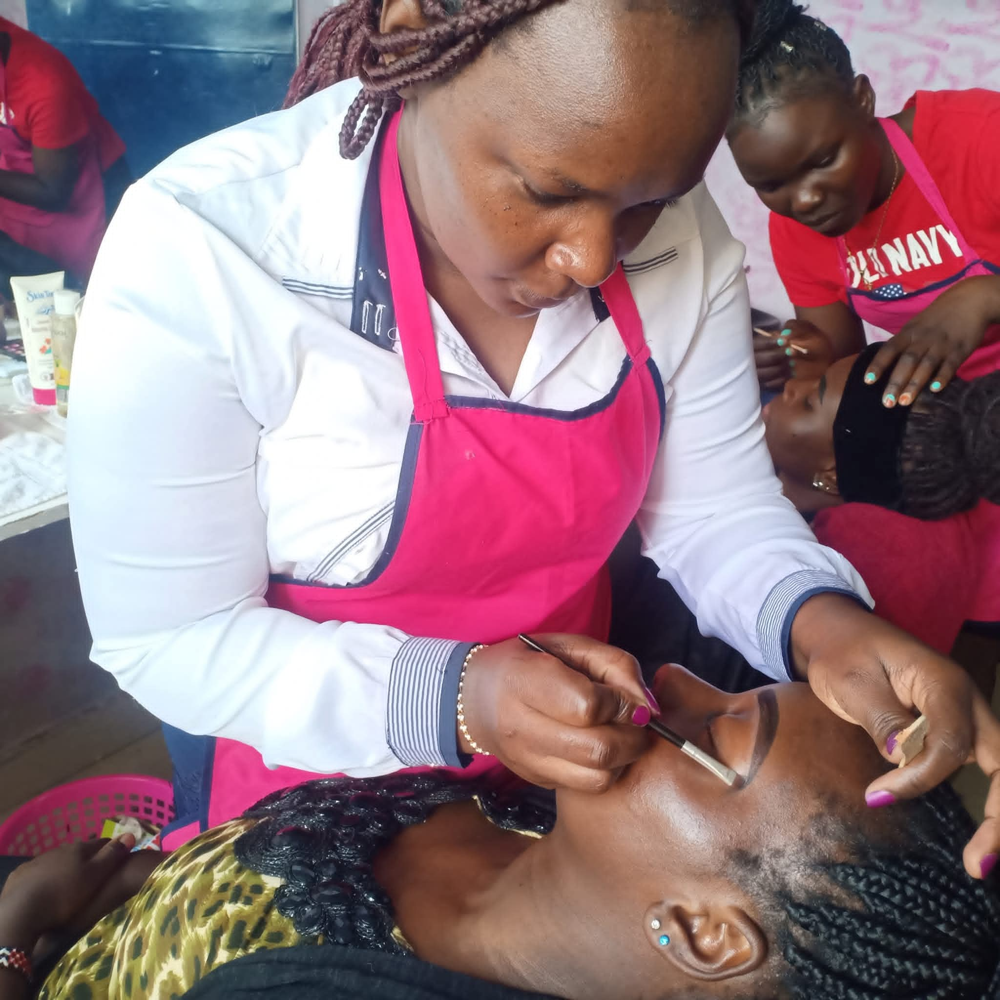
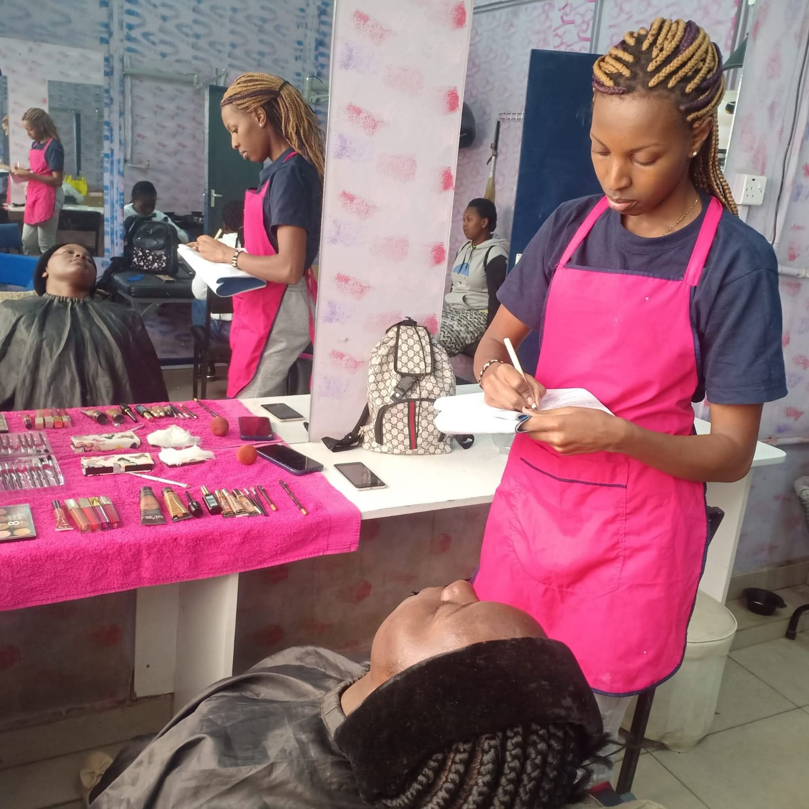

VOCATIONAL
SKILLS
TRAINING
Creating dignified pathways to employment by equipping individuals with practical, market-relevant skills that build lasting economic security.
Skills That Open Doors
Our Vocational Skills Training Program is the cornerstone of One Touch ICT's work in Mathare. It connects community members — especially women and youth — to practical trades that lead directly to employment and entrepreneurship.
A significant share of Kenya's most vulnerable populations—particularly those living in informal settlements such as Mathare—experience persistently high unemployment. Economic activity is largely confined to the informal sector, where work is often low-paying, inconsistent, and lacks basic protections.
Gender disparities further compound these challenges. Women in informal settlements earn approximately 42% less than men, reflecting deep-rooted barriers to equitable participation in the economy.
Without targeted and sustained interventions, Kenya risks leaving a substantial portion of its human capital underdeveloped—especially within communities that are vital to the country's urban economy.

High Unemployment in Mathare's Informal Settlements
A significant share of Kenya’s most vulnerable populations—particularly those living in informal settlements such as Mathare, where we operate—experience persistently high unemployment. Economic activity is largely confined to the informal sector, where work is often low-paying, inconsistent, and lacks basic protections, limiting households’ ability to achieve financial stability.
Gender disparities further compound these challenges. Women in informal settlements earn approximately 42% less than men, reflecting deep-rooted barriers to equitable participation in the economy.
Together, high unemployment, income volatility, and gender inequality weaken household resilience and constrain broader economic growth. Without targeted and sustained interventions, Kenya risks leaving a substantial portion of its human capital underdeveloped—especially within communities that are vital to the country’s urban economy.

Practical Training Across Key Trades
One Touch’s Vocational Skills Training Program has empowered thousands of individuals in Mathare’s informal settlements through practical skills development, enterprise support, and access to income-generating opportunities.
With a strong focus on women and youth, the program tackles systemic barriers to economic participation, enabling households to move beyond day-to-day survival toward improved living standards and greater access to education.
Many graduates have successfully launched and expanded small businesses, contributing to local economic growth and job creation within their communities.
Building on this impact, the program is designed to equip young people with market-relevant skills aligned with their interests and local demand. Training is offered across a range of vocational areas—including hairdressing, beauty therapy, catering, tailoring, and computer skills—creating clear pathways to dignified employment, entrepreneurship, and sustainable livelihoods.
By strengthening individual earning potential and supporting community-level economic systems, the program advances financial inclusion and fosters long-term resilience.
Expected Outcomes
Each person who completes our vocational training program gains more than a skill — they gain a foundation for a sustainable livelihood.
Market-Ready Skills
Graduates leave with practical, accredited skills in trades that employers and customers in Nairobi actively seek.
Employment Pathways
Through partnerships with local businesses and TVET institutions, graduates access job placement and apprenticeship opportunities.
Entrepreneurship
Many graduates launch small businesses, contributing to local economic growth and creating jobs within their communities.
Women's Economic Power
Women gain financial independence, enabling them to invest in their children's education and improve household wellbeing.
Reduced Unemployment
Our 90% post-training employment rate demonstrates the direct impact of practical skills on community-level unemployment.
Community Resilience
As household incomes improve, communities become more stable — with greater investment in education, health, and local enterprise.
Help Us Train
the Next Generation
Your support funds practical skills training for unemployed youth and women in Mathare. Every contribution builds a future.